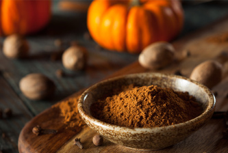

Why Pumpkin Spice is so Popular
October 23, 2021
We’re nearing the 20-year mark for pumpkin spice lattes at Starbucks and other coffee shops. But that’s not the only pumpkin trend. Pumpkin bread, muffins and cookies are also popular on the market. Coffee creamer and pumpkin beer are also huge food trends in the fall. Pumpkin spiced recipes abound on the internet and Pinterest alike. There’s a lot of theories about why pumpkin spice is so popular including the following:
- Pumpkin and those warming spices remind us of coziness, holiday baking and Thanksgiving time. It’s the ultimate comfort-food.
- Buying a “PSL” or other product when you’re out is an affordable luxury. It’s a treat that won’t break the bank and feels like an indulgence. That could be why pumpkin spiced products were especially popular in 2008 during the recession and perhaps one reason behind an early release in 2020 during COVID.
- Pumpkin and those warming spices remind flavors embody American nostalgia. As we seek that external feeling of happiness s of coziness, holiday baking and Thanksgiving time. It’s the ultimate comfort-food.
- It’s delicious. Or at least some people think so. I’m breaking down the flavor profile below but there’s no denying that ground cinnamon, nutmeg, ginger, cloves, and (sometimes) allspice are a wonderful combination of spices.
Source: champagnenutrition.com Accessed: October 23, 2021